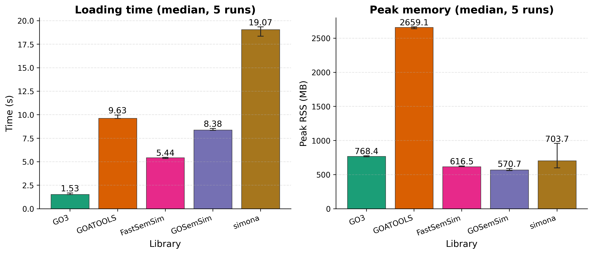
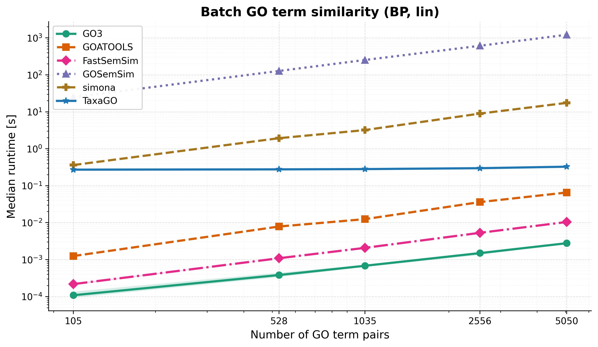
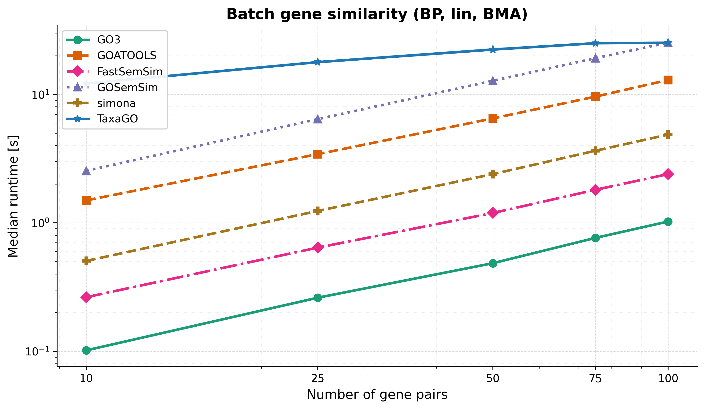

Benchmarks¶
GO3 was benchmarked against five established libraries covering the most commonly used implementations of GO semantic similarity:
GOATOOLS 1.3.11 (Python)
FastSemSim 1.0.0 (Python)
GOSemSim 2.36.0 (R / Bioconductor)
simona 1.8.1 (R / Bioconductor)
TaxaGO (Rust CLI;
semantic-similaritybinary)
All workloads use the human GO annotation corpus, Biological Process sub-ontology, and Lin similarity. Gene-level benchmarks use the Best Match Average (BMA) groupwise strategy.
Setup¶
Item |
Value |
|---|---|
GO ontology |
|
Annotations |
GOC human GAF, 2026-03-28 (879,127 annotations after filtering NOT/ND and propagating) |
Namespace |
Biological Process (BP) |
Term method |
Lin |
Gene method |
Lin + BMA |
Hardware |
Apple M3 Pro (11 logical cores, 18 GB RAM) |
OS / runtime |
macOS 26.2, Python 3.12.2, R 4.5.1 |
Threads |
8 (where the tool supports parallelism) |
Protocol |
2 warmup + 5 timed repetitions per size group; medians with bootstrap 95% CI |
Summary¶
Workload |
GO3 |
Fastest alternative |
Worst alternative |
|---|---|---|---|
Loading + IC |
1.53 s / 768 MB |
FastSemSim 5.44 s |
simona 19.07 s |
Term similarity, 5,050 pairs |
2.8 ms |
FastSemSim 10.4 ms (4× slower) |
GOSemSim 1,217 s (~4×10⁵ slower) |
Gene similarity, 100 pairs (BMA) |
1.02 s |
FastSemSim 2.39 s (2× slower) |
TaxaGO 25.2 s (25× slower) |
GO3 is the fastest library in every workload tested. Absolute numbers depend on hardware and dataset versions; see the plots below for scaling behaviour.
Loading and memory¶

TaxaGO is excluded from the loading comparison because, as a standalone binary, its initialization semantics are not directly comparable to embeddable libraries.
GO3 achieves the fastest initialization (1.53 s). GOSemSim and FastSemSim use less peak memory (571 MB and 617 MB respectively) at the cost of substantially longer load times. GOATOOLS requires 2,659 MB — 3.5× more than GO3.
Batch GO-term similarity¶

At 5,050 term pairs (Lin, BP), GO3 is 4× faster than FastSemSim, 24× faster than GOATOOLS, >6,000× faster than simona, and up to ~4×10⁵ faster than GOSemSim. TaxaGO’s curve is approximately flat because its per-invocation startup cost (OBO load ~0.27 s) dominates over the actual matrix computation for these term-set sizes.
Batch gene similarity¶

At 100 gene pairs (Lin + BMA, BP), GO3 is 2× faster than FastSemSim, 5× faster than simona, 13× faster than GOATOOLS, 25× faster than GOSemSim, and 25–119× faster than TaxaGO depending on batch size.
Reading the plots¶
All runtime axes are log-scale.
Shaded bands show bootstrap 95% confidence intervals over 5 runs.
For very small inputs, fixed per-call overhead can dominate; the practical advantage appears on medium and large workloads.
Numerical validation¶
Because every library uses a slightly different ancestor-traversal strategy and MICA
selection, exact agreement between any two libraries is not expected. A pairwise
numerical comparison is provided in
scripts/Supplementary Notebook S2.ipynb:
GO3 vs GOATOOLS — near-perfect agreement (Pearson r > 0.97 at term and gene level). This confirms GO3’s IC and MICA pipeline matches the reference Python implementation.
FastSemSim / GOSemSim / simona — moderate agreement with GO3 (r ≈ 0.63–0.95 depending on level and tool), due to alternative MICA-selection strategies documented in each tool’s literature.
TaxaGO — the largest divergence (r ≈ 0.20–0.48), consistent with its independent OBO parser and IC computation.
At the gene level, BMA aggregation smooths term-level discrepancies, so agreement is uniformly higher than at the term level.
Methodology¶
Compared libraries¶
All libraries are invoked through dedicated runner adapters under
scripts/runners/. Each adapter:
reports whether the tool is available on the system;
isolates the tool (subprocess for R / CLI tools) so import/parse costs are fully included in the loading timings;
receives the same sampled inputs for every size point, so no tool gets a different workload.
Loading benchmark¶
Each run spawns a fresh process, so import and parse costs are paid every repeat. Reported metrics:
median wall-clock time (5 runs)
median peak resident memory (RSS)
Term-pair benchmark¶
Uses closed term sets: for each target pair count P, the smallest N with
C(N,2) ≥ P is chosen, and every runner sees the same N terms. Reported x-axis is
the actual number of pairs C(N,2). This is required to accommodate TaxaGO, which
takes a term set and returns the full N×N similarity matrix.
Gene-pair benchmark¶
Disjoint random samples of gene pairs (per size group), restricted to genes with at least 8 BP annotations. Every runner processes the same pair sets.
All-vs-all gene benchmark¶
For each cohort size g, all g(g−1)/2 pairs are generated. This workload reflects
realistic quadratic scenarios: clustering, network construction, or cohort-level
exploratory analyses.
Fairness notes¶
All libraries receive the same OBO and GAF inputs.
Gene-level BMA is not exposed natively by every library; where absent (e.g., TaxaGO), the adapter implements BMA on top of the library’s term-pair output, and the reported time covers the full end-to-end pipeline.
Random seeds are fixed (
seed=42) so samples are reproducible.
Reproducing the benchmarks¶
The orchestrator is scripts/benchmark_all.py. Discovery is automatic: every runner
whose underlying tool is available on the system participates.
Default profile:
python scripts/benchmark_all.py --outdir imgs
Paper-ready profile (larger sizes, more repeats, SVG + PNG output):
python scripts/benchmark_all.py --paper-ready --outdir imgs
Restrict to specific libraries:
python scripts/benchmark_all.py --only go3,goatools,fastsemsim --outdir imgs
Exclude the heaviest tools:
python scripts/benchmark_all.py --exclude gosemsim,simona --outdir imgs
Regenerate plots from an existing results file (no recomputation):
python scripts/benchmark_all.py --replot imgs/benchmark_results.json --outdir imgs
Output artifacts¶
imgs/benchmark_loading_time_memory.pngimgs/benchmark_batch_similarity.pngimgs/benchmark_gene_batch_similarity.pngimgs/benchmark_all_vs_all_gene_similarity.pngimgs/benchmark_results.json— raw timings, medians, confidence intervals, and full experimental metadata (OBO/GAF versions, system info, runner capabilities).